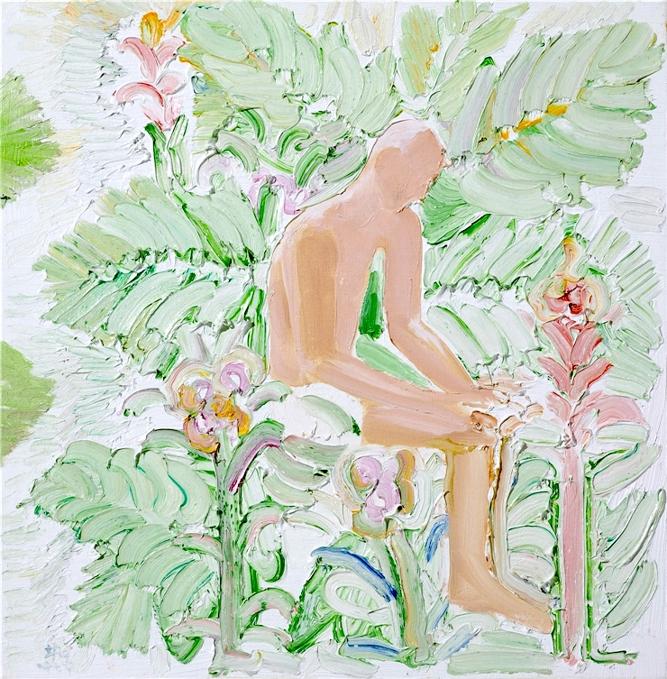

정원 가꾸기
이희현
2008_0325 ▶ 2008_0412

초대일시_2008_0325_화요일_06:00pm
관람시간 / 10:30am~06:30pm / 일요일 휴관
보충대리공간 스톤앤워터
경기도 안양시 만안구 석수2동 286-15번지
Tel. +82.31.472.2886
www.stonenwater.org
나는 스스로 사물을 재현하는데 몰입하는 구상화가적 체질이라는 것을 부인하지는 않지만 리얼리스트와는 다른 어떤 허구적 요소(내재된 막연한 공상)가 작업 과정에서 많이 개입됨을 느낀다. 대상을 외형화시키기 보다는 내재화시킨다는 표현이 맞는지는 모르겠으나 기술적 완벽성(테크닉)이 때로 표현하고자 하는 본질을 가리는 경우에 대해 회의적인 생각이 있었다. 반면 내재화의 경우 쉽게 공감을 형성한다거나 시각적 경쾌함을 보여주지는 못하지만 있는 듯 없는 듯 또는 덤덤하기도 하고, 오랫동안 두고 보는 재미와 순간적으로 생경한 느낌이 오기도 하고, 그 과정 속에 숨었던 것이 오롯이 보이는 경우도 있다. 어느 순간 문득 느껴지는 울림(먼지처럼 침잠된 언어들이 스스로 출현해서 생기는 일상과 낯설음 사이에 미묘함)같은 것을 느끼기 위해 궁리하고 시도해 보는 과정이 나의 작업일터인데... 암튼 이러한 과정이 새로움을 보여주든 진부함을 보여주든 나의 단면인 것이다. 따지고 보면 구상 회화가 지닌 매력은 일상을 존중하는 순한 노동에 있고 그 이상을 넘으려는 발상의 기발함이 합하여 새로움을 보여주는 것이 아니겠는가?
■ 이희현
_waifu2x_photo_noise3_scale.png)
_waifu2x_photo_noise3_scale.png)
_waifu2x_photo_noise3_scale.png)
_waifu2x_photo_noise3_scale.png)
_waifu2x_photo_noise3_scale.png)
_waifu2x_photo_noise3_scale.png)
_waifu2x_photo_noise3_scale.png)
_waifu2x_photo_noise3_scale.png)
어디서 본듯한 영화 제목과도 같은 말이 머릿속을 스친다. '누구나 기억은 있다.' 그리고 '누구에게나 무언가를 기억하는 순간은 특별하다'라는 하나의 문장이 여기에 덧붙여진다. 특.별.함.이라는 단어가 발화되는 순간, 이희현의 작품에 등장하는 다양한 존재들이 그 모습을 드러내기 시작한다. 순수함의 표상인 인물들과 유심히 보지 않으면 지나칠 수도 있는 (그러나 작가에게는 특별한) 과일과 꽃, 나무들이 그것이다. 여러 시간과 공간의 층위로 촘촘히 채워지는 것이 기억이라고 한다면 그의 작품은 일상적인 시공간을 바탕으로 한 구성물인 것이다. 애정 어린 눈으로 오랜 동안 어떤 사물을 지켜보면서 그때의 순간들을 기억해내는 것은 작가가 무언가를 그리는 움직임의 시작이고 동기가 된다. '일상적인 것에 나를 더한 결과가 작품이다'라고 나지막하게 속삭이는 작가의 목소리가 어디선가 들리는 듯하다. 한편으로 일상에 대한 기억이 특별함을 갖는 것은 작가의 표현을 빌려 말하자면 '가꾸기'라는 방식 때문일 것이다. 소박하면서도 고전적인 느낌을 주는 이것은 회화에 있어 색, 구도, 조화와 같은 기본을 준수하려는 방법적인 측면이라고 작가는 설명한다. 이러한 요소들이 결합되고 중첩되어 관람자에게 감상의 즐거움을 줄 수 있는 희망적인 요소가 생성되길 그는 기대한다. '무언가를 가꾸다'라는 하나의 문장을 완성하기 위해 필요한 목적어로서 정원과 같은 곳이 그려지는데 여기서 발견해낸 소재들을 가꾸는 작가는 일종의 정원사처럼 느껴진다. 쉬지 않고 그림을 그리는 과정 속에서 순한 노동이 주는 즐거움에 빠져있는 그는 관람자에게 아름다움을 전달할 수 있는 행복한 존재인 것이다. 평화롭고 소박한 정원을 거닐고 있는 사람들의 모습이 얼핏 그의 작품 속에서 비춰진다.
■ 이윤진